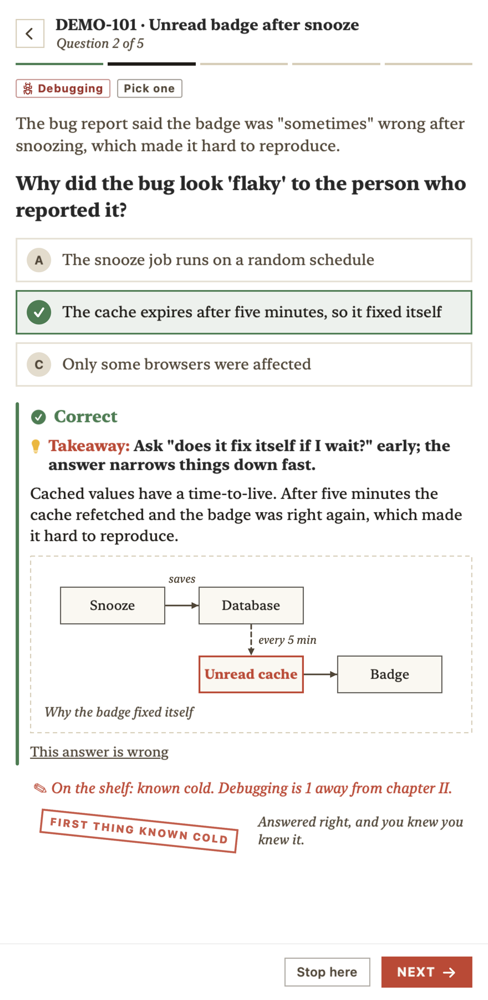

Task Coach quizzes you on what you and your AI coding agent actually did, then turns each ticket into a lesson in software engineering practice. Three questions at a time, from your menu bar.
When an agent writes most of the code, it's easy to approve work you couldn't explain. Then your lead asks why the bug happened, or how the fix works, and the details are gone. Task Coach checks that the big picture of each task stuck, and grows your general engineering judgement while it does.
How a quiz works
Your ticket, the practice behind it, then the practice somewhere new.
Your ticket
What happened in your work, and why.
Why did the unread badge look "flaky" to the person who reported it?
Name the practice
Which general practice this work shows, or would have caught it sooner.
If it fixes itself when you wait, suspect a cache.
Transfer
The same practice in a scenario that has nothing to do with your codebase.
A booking API's prices are sometimes out of date for a few minutes…
Answers about your work must quote your session, and the app throws away any question whose quote isn't really there. If one still slips through, "This answer is wrong" takes it back out of your stats.

Built on learning research
Designed so it sticks.
Recall beats rereading. Answering questions with feedback is one of the most reliable ways to remember. Rowland, Psychological Bulletin, 2014
Spaced review. Missed or guessed questions come back 1, 3 and 7 days later, and retire after three correct answers. Latimier, Peyre & Ramus, Educational Psychology Review, 2021
Say how sure you are first. Mistakes you were certain about are the easiest to fix once you see why, so they come back first. Butterfield & Metcalfe, 2001
Short sittings. Three questions, then a break. Stop after any question; the rest wait for later.
Progress you can see. Things you answer right and sure become cards on a "known cold" shelf, and each skill moves through chapters I to V. No streaks, no points.
A fact-checked playbook
Best practice, not just what your code happened to do.
Every practice a quiz teaches comes from the playbook: 92 rules across ten skills, each checked against the page it cites. When your work fell short of a practice, the quiz says so.
Everything is stored locally, in ~/Library/Application Support/TaskCoach.
To write a quiz, a condensed copy of your recent sessions goes to Claude through your own claude CLI, the same way Claude Code itself works. Nothing else leaves your Mac.
Questions are told never to include customer names, contact details or message content.
An optional Linear key is kept in your login Keychain.